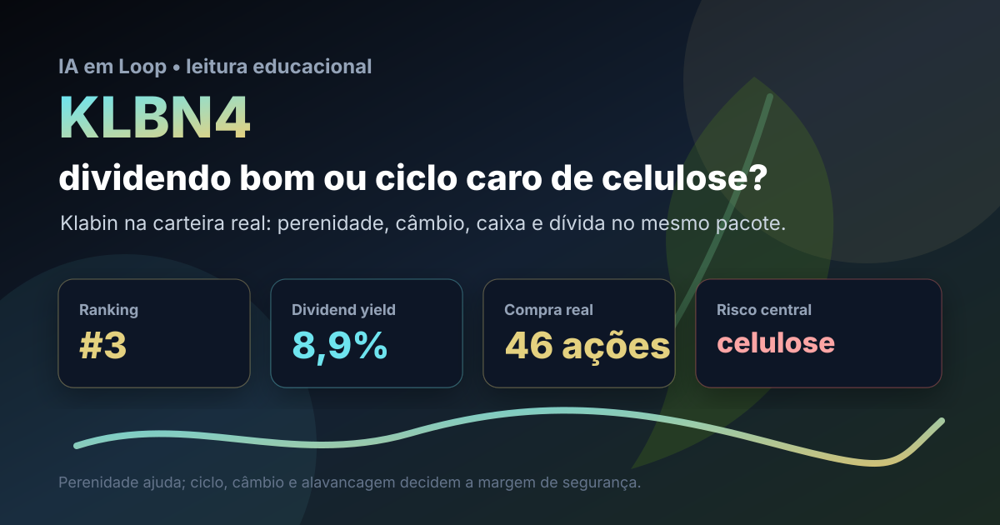

26/08: KLBN4, Klabin e o dividendo que depende da celulose
KLBN4 entrou na compra real de agosto da carteira BESST e Buffett B3. A pergunta central é simples: dividend yield alto e P/VP baixo compensam o risco de celulose, câmbio e alavancagem?

Klabin combina ativo industrial perene com preço de commodity; a análise precisa separar qualidade operacional de momento favorável do ciclo.
Resposta curta: boa empresa, mas não é dividendo sem ciclo
Na base local do IA em Loop, KLBN4 aparece em 3º lugar no ranking BESST e Buffett B3, com dividend yield de 8,89%, P/VP de 0,50, P/L de 46,38 e score de 60,7. A compra real de agosto registrou 46 ações a preço médio de R$ 3,47, total bruto de R$ 159,62, dentro da carteira BESST e Buffett B3.
A leitura prática é: KLBN4 é uma posição de qualidade industrial e renda potencial, mas não deve ser lida como renda fixa disfarçada. A companhia vende papel, embalagens e celulose, opera com ativos pesados e receita sensível a dólar, preço internacional da celulose, demanda global, custo de madeira, energia, logística e estrutura de dívida.
O que os dados verificados mostram
O dado mais forte é o alinhamento entre filtro quantitativo e posição comprada. KLBN4 não está apenas no ranking: recebeu aporte real em agosto. Isso transforma a tese em acompanhamento de carteira: o papel precisa entregar caixa e disciplina financeira, não apenas aparecer barato em múltiplos patrimoniais.
O ranking favorece KLBN4 por histórico longo de dividendos, classificação perene, P/VP descontado e dividend yield elevado. O ponto de atenção é o P/L alto na base capturada: ele sugere que o lucro corrente pode estar pressionado ou que a métrica de lucro não conta a história inteira. Para uma empresa intensiva em capital, o investidor precisa olhar geração de caixa, dívida líquida, manutenção de ativos e ciclo da celulose.
| Métrica verificada | Fonte/período | Valor | Leitura |
|---|---|---|---|
| Posição no ranking | BESST e Buffett B3 IA em Loop | #3 | forte encaixe quantitativo |
| Dividend yield | Ranking IA em Loop 2026-08 | 8,89% | renda atraente, mas variável |
| P/VP | Ranking IA em Loop 2026-08 | 0,50 | preço abaixo do patrimônio contábil |
| P/L | Ranking IA em Loop 2026-08 | 46,38 | lucro atual exige cautela |
| Compra recente | Nota de corretagem de agosto | 46 ações a R$ 3,47 | posição real, não apenas observação |
Por que KLBN4 importa agora
Klabin importa porque testa uma armadilha comum em ações de dividendos: olhar apenas o yield passado. Em negócios cíclicos, dividendos altos podem vir de uma fase boa de preço, câmbio ou caixa; quando a celulose recua ou a dívida pesa, a distribuição pode mudar. O yield é ponto de partida, não garantia.
Ao mesmo tempo, KLBN4 tem características que justificam estudo: escala, marca industrial, base florestal, integração vertical, exposição a embalagens e histórico de distribuição. Esse conjunto cria uma tese diferente de uma commodity pura. A dúvida não é se Klabin é relevante; a dúvida é quanto pagar por uma empresa boa quando parte relevante do lucro depende de variáveis que ela não controla.
KLBN4 faz sentido como posição de carteira real quando o preço já embute parte do risco do ciclo. A tese melhora se celulose, câmbio, embalagens e dívida caminharem juntos; piora se o dividendo alto virar apenas fotografia de um passado mais favorável.
O que favorece e o que ameaça a tese
Favoráveis
• Ranking forte no filtro BESST e Buffett B3.
• Compra real recente, conectando análise e carteira publicada.
• P/VP descontado, sugerindo margem patrimonial no preço.
• Dividend yield elevado, relevante para carteira de renda variável.
• Negócio com ativos florestais, embalagens e exposição ao dólar.
Desfavoráveis
• Preço internacional da celulose pode comprimir receita e margem.
• P/L alto indica que o lucro capturado merece normalização.
• Dívida e investimento pesado podem limitar dividendos.
• Câmbio ajuda receita exportadora, mas também afeta custos e dívida.
• Ação preferencial exige atenção à liquidez e à estrutura de classes.
Checklist para acompanhar daqui em diante
- Celulose: observar preço internacional, estoques e demanda de China, Europa e Estados Unidos.
- Embalagens: acompanhar volume doméstico, repasse de preço e sensibilidade à atividade econômica brasileira.
- Dívida: comparar alavancagem, prazo, custo financeiro e geração de caixa operacional.
- Dividendos: checar se a distribuição vem de caixa recorrente ou de uma janela favorável do ciclo.
- Preço pago: exigir desconto suficiente para uma empresa boa, mas cíclica e intensiva em capital.
Conclusão
A resposta para a pergunta do post é: KLBN4 combina qualidade e desconto, mas o dividendo só é confortável se sobreviver ao ciclo da celulose e à disciplina de dívida. O ranking aponta um ativo perene, com yield alto e P/VP baixo; a compra real confirma convicção de carteira. O risco é tratar uma empresa industrial cíclica como se fosse fluxo previsível.
Na régua do IA em Loop, KLBN4 entra como posição de carteira real que merece acompanhamento por caixa, alavancagem e ciclo. Se a companhia mantiver geração de caixa e dividendos sem sacrificar balanço, o preço parece interessante. Se o ciclo virar contra, a proteção precisa vir do desconto comprado — não da memória do último yield.